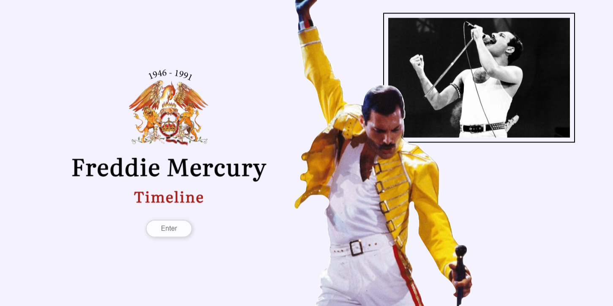
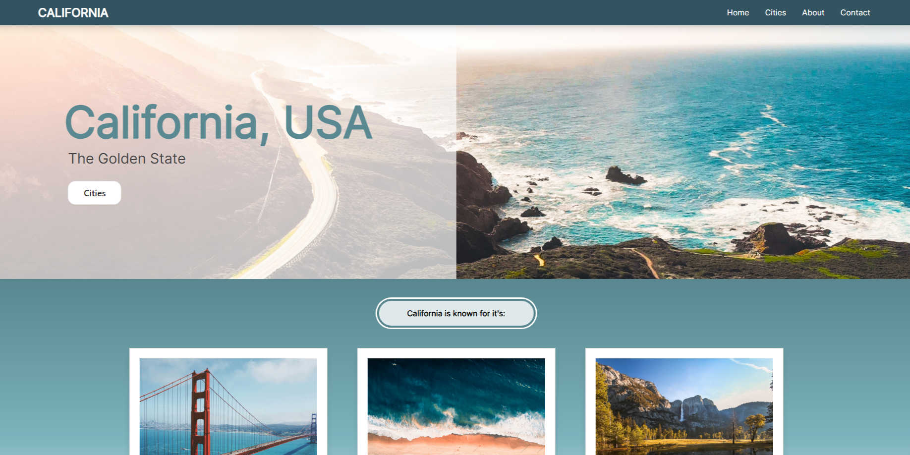
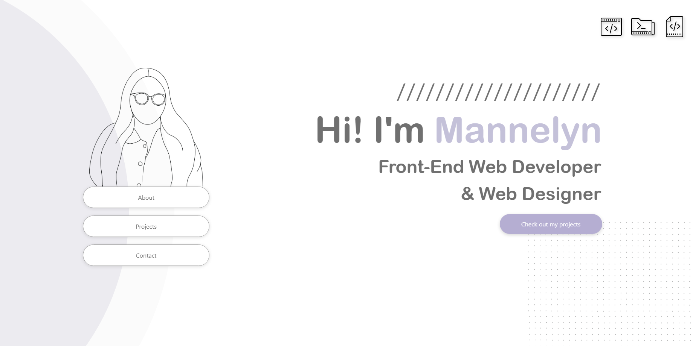

Freddie Mercury Timeline
Personal mini project designed by me and built using HTML and CSS.
This was a project I created with the intention of adding
emphasis to CSS animations.

Three California Cities
University project designed by me and built using HTML, CSS, and
some Javascript.
I created a website with instructions to include information
about three cities of my choice.

Portfolio
My portfolio was designed by me and built using HTML and CSS.
I decided to code my portfolio from scratch to create a
portfolio that resonates with me.